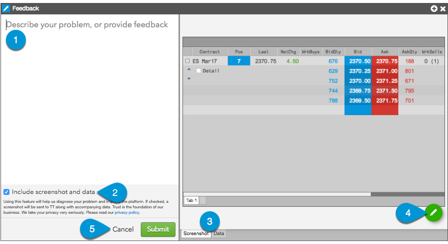

Feedback Widget display
The Feedback Widget display consists of the following:

- Message area — Type and enter a description of your issue, or provide a question or other feedback.
- Include screenshot and data setting — When checked (enabled), this option allows you to include a screenshot of the widget and corresponding user data (account, username, environment, etc.) in the message you send to TT. When unchecked, no screenshot and meta data are sent with the message.
- Tabs — The Screenshot tab shows a screen capture of the widget or your entire workspace. The Data tab includes meta data, such as your account, username, environment, etc.
- Editing options — Displays Feedback widget icons that allow you to capture an image of your workspace, or edit portions of your screenshot image(s).
- Buttons — Used for submitting the feedback to TT or canceling and closing the widget without sending feedback.
Feedback Widget icons
| Icon | Description |
|---|---|
| Provides editing and screen capture options. On hover, displays the camera icon to capture the workspace. On click, displays options to edit the screenshot. | |
| Captures a screenshot of your entire workspace. Also toggles between widget and workspace screen captures. To show this icon, hover on the edit icon. | |
| Allows you to black-out parts of the screenshot. Displayed after clicking the edit icon. | |
| Allows you to highlight parts of the screenshot. Displayed after clicking the edit icon. | |
| Cancels any edits made to the screenshot. Displayed after clicking the edit icon. | |
| Saves any edits made to the screenshot. Displayed after clicking the edit icon. |